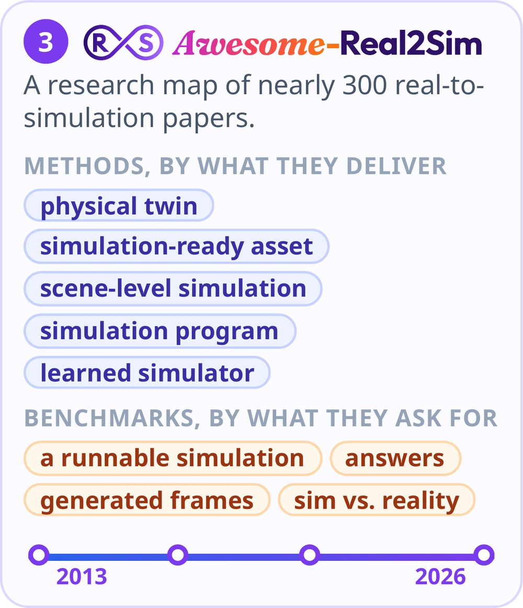
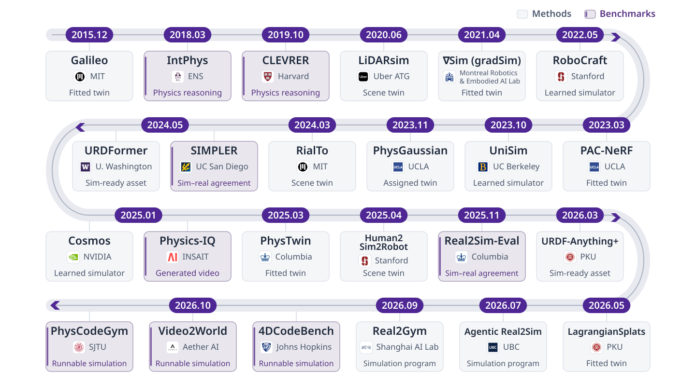
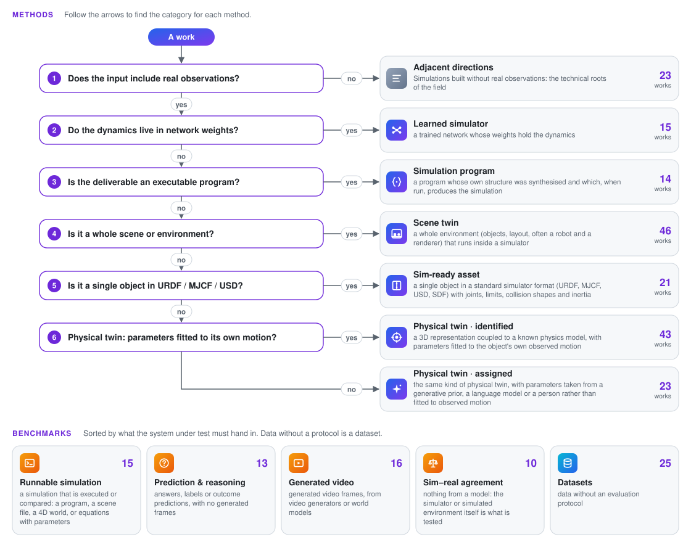

A research map of nearly 300 papers
- Sorted by what each paper deliversEach paper has exactly one place.
- Tagged with how it is builtFrom optimization to language-model agents.
- A roadmapKey methods and benchmarks on one route, month by month.
- Open to contributionsAdd a paper with one entry or one issue.

A map of a scattered field
Real-to-simulation papers come from vision, graphics and robotics, and they deliver very different things: physical twins, simulation-ready assets, whole scenes, programs and learned simulators. Awesome-Real2Sim puts their methods, benchmarks, datasets and surveys on one map.

Scroll sideways to see the whole figure.

Scroll sideways to see the whole roadmap.
Sorted by what each paper delivers
Methods are sorted by what they deliver, benchmarks by what the system under test must hand in.

Scroll sideways to see the whole figure.
Contribute
Missing a paper? Add one entry or open an issue: see CONTRIBUTING.
BibTeX
If you use either project, please cite our paper:
@article{real2simlab2026,
title = {Real2SimLab: A Unified Platform for Real-to-Simulation Transfer},
author = {Zhang, Yongchang and Huang, Jie and Ni, Yunhe and Zhou, Ningyu and Zhao, Guangyu and Liu, Ruixun and Huang, Rui and Wu, Yidi and Zhang, TianZe and Jiang, Zixiang and Li, Xiang and Shen, Kevin and Zhong, Yiwu},
journal = {arXiv preprint arXiv:2611.34849},
year = {2026}
}